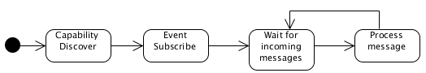

The MIH-User specifies a media independent interface between the MIHF and upper layers of the mobility management protocol stack. The upper layers need to register with the MIHF as users to receive MIHF-generated events and link-layer events which are originated at lower layers. MIH-Users directly send commands to the local MIHF using the service primitives available in the 802.21 standard.
The MIH-User implementation is very simple, supporting only capability discover, event subscribe and event notification mechanisms.
When registering with the MIHF, the MIH-User defines which commands it supports.
Therefore at the reception of a MIH message, if it is supported by the MIH-User, the message will be forwarded to the MIH-User.

At the bootstrap, the MIH-User sends a Capability Discover Request to the destination MIHF and waits for its response.
msg << odtone::mih::request(odtone::mih::request::capability_discover, _mihfid); _mihf.async_send(msg, boost::bind(&mih_user::capability_discover_response, this, _1, _2));
The response message is processed and for every discovered interface the MIH-User will subscribe to all supported events.
msg >> odtone::mih::response()
& odtone::mih::tlv_status(st)
& odtone::mih::tlv_net_type_addr_list(ntal)
& odtone::mih::tlv_event_list(evt);
//...
if (ntal && evt) {
for (odtone::mih::net_type_addr_list::iterator i = ntal->begin(); i != ntal->end(); ++i) {
odtone::mih::message req;
// ...
_mihf.async_send(req, boost::bind(&mih_user::event_subscribe_response, this, _1, _2));
}
}
For every Event Subscribe Request sent to the MIHF is received a Event Subscribe Response.
At this moment, MIHF knows which events must forward to the MIH-User.
void event_handler(odtone::mih::message& msg, const boost::system::error_code& ec);
However, when a event message is received there is no specific behaviour. Instead of, the MIH-User only records in the log what type of message was received.
MIH Usr Configuration: --help Display configuration options --conf.file arg (=mih_usr.conf) Configuration file --conf.recv_buff_len arg (=4096) Receive buffer length --conf.port arg (=1234) Listening port --user.id arg (=user) MIH-User ID --user.commands arg MIH-User supported commands --mihf.ip arg (=127.0.0.1) Local MIHF IP address --mihf.local_port arg (=1025) Local MIHF communication port --dest arg MIHF destination
The MIH-User can be configured based on a set of parameters, which can be configured either using an configuration file or passing them directly in the command line.
The destination MIHF must be defined using the --dest option in the command line. If this option is not specified, the MIH-User will send a "MIH_Capability_Discover" message to a multicast destination.
The provided implementation of the MIH-User can be used as the base of your MIH-User implementation, since it allows to do several extensions in a simple and fast way.
For example, in event handler can be added specific behaviour for a received event message. In this way, the MIH-User can make its own decisions about the actions that will performe for a particular event reception.
void mih_user::event_handler(odtone::mih::message& msg, const boost::system::error_code& ec)
{
// ...
switch (msg.mid()) {
case odtone::mih::indication::link_up:
log_(0, "MIH-User has received a local event \"link_up\"");
// Add some specific behaviour here
break;
// ... other link events
}
}
You can also define other handlers that will be responsible for handling the response message:
void new_handler(odtone::mih::message& msg, const boost::system::error_code& ec);
It must be associated with the sent message, so when the response arrives the handler is called:
_mihf.async_send(msg, boost::bind(&mih_user::new_handler, this, _1, _2));
It can be defined as the default handler of the MIH-User:
mih_user::mih_user(const odtone::mih::config& cfg, boost::asio::io_service& io) : _mihf(cfg, io, boost::bind(&mih_user::new_handler, this, _1, _2))
Before running the MIH-User, the local MIHF should already be running. Otherwise, the MIH-User will send the "MIH_Capability_Discover.request" message and will wait for the response message that will never arrive. The local messages are sent via UDP and no acknowledge mechanisms exists.
The --dest option must be used when the destination MIHF is a not a multicast.